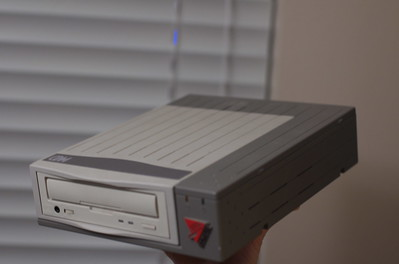
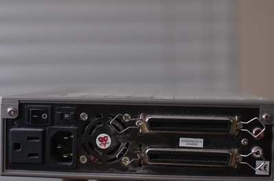
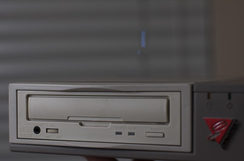

From Whence it Never Will Return
$400. At the time it was almost all my savings. I didn't even own my own computer when I bought it. The only computing device I had to my name at the time was a soon-to-be-dropped-and-ruined Iomega Zip Drive. Not only could this thing hold almost six and a half times as much content, but you could make mixes on CD's instead of on tapes. Now we'd be rocking – literally.



Behold... my DynaTek CDM240 (thanks to my hand model, Maria, for holding the thing so I could take pictures of it). I think my parents thought I was nuts when I bought this. I just knew that if I did (buy it), I would be one of the coolest geeks around—yes I see now how those two words don't go together very well.
At the time, if you gave me $10, a song list, and all the CD's where those songs came from, I was willing to make you a mix within a few days. I think the blank CD's cost me $2 each, but I figured I could make some easy money. I was the only person I knew who could make a CD. My monopoly didn't last very long, when another kid got one too, charged less, and guaranteed it back overnight. It wasn't a very good living to being with, so I stopped the service for others.
Because I find humor in the stats now, I'll share with you how awesome it was:
Reading speed..........: 4x
Writing speed..........: 2x
Internal buffer size...: 1 MB
Loading mechanism......: Tray
FlashROM for firmware..: Yes
Latest firmware version: V2.05 (as of 20-Aug-1997)
Supports Disk At Once..: Yes
Supports Packet Writing: Yes
Release date...........: <unknown>
Interface..............: SCSI-2
Comments...............: Discontinued
That's right, get jealous. It could burn a CD in 37 minutes with that 2x speed. You didn't have to wait the full 74 for it to get done. Gone were those days. The burner was so nice, that if you turned off my desk lamp while it was burning a disc, the burner would immediately bomb out. Quality.
Upon investigation, I couldn't find much of anything about the makers of this fine burner. I found those stats here and their logo:
Apparently the company went out of business and got investigated in '99. Let's be honest though, I don't really care about the company, back to the post.
Why do I write all this about this obsolete, piece of crap, CD burner? Last weekend it finally got thrown into the dumpster (from whence it never will return), after more than a decade of being in my life. It was the burner that made all the original mixes for Maria. It more than burned its way into my heart. Despite not even being worthy of a donation to a thrift store, it was worthy of blogging about. DynaTek CDM240, I'll miss you. In honor of your passing, I've written this little haiku:
Just like a wild fire
You burned through my blank CDs
You sure cost a lot
- Prior: Once Every Four Years
- Next: Old Reliable